Bollettini neve · novembre 2026
Bollettini neve quotidiani per sciatori: dove c'è neve, cosa arriva e dove sciare, dalla mappa neve di SnowScope e dalle stazioni di misura. Ogni numero viene dai dati del giorno.


Zermatt ha 47 cm sui versanti superiori oggi, 690% al di sopra della mediana di novembre. Il livello 0°C rimane al di sopra di 2200 m fino a venerdì.

Le stazioni sciistiche svizzere hanno il 142% della copertura nevosa normale per il 18 novembre. Glacier 3000 è in testa con 52 cm, prima delle forti nevicate previste.

L'Italia affronta un evento nevoso importante: fino a 95 cm sono previsti nei prossimi 7 giorni, con 34 cm attesi venerdì 20 novembre. Dati del 18 novembre.


A Andermatt (2963 m) la previsione indica 75 mm di precipitazioni dal 15 novembre al 20 novembre. Nelle ore di pioggia lo zero termico è vicino a 2160

Courmayeur guida le previsioni con 88 cm in 72 ore; la profondità della neve è al 142 percento della norma per metà novembre secondo i dati del 15 novembre.

Beaver Mountain applica un unico prezzo adulti di 75 $ per la stagione 2026-27. La nostra storia della neve dice che inizio dicembre lì è un vero azzardo; la settimana prima di Natale è molto più sicura.

Il biglietto adulti 2026/27 di Bridger Bowl è a 86 $ online, 99 $ alla cassa. La nostra serie storica dice che metà dicembre è un testa o croce a mezza montagna; fine dicembre è più sicuro.

Indy Base Pass 419 $, Indy+ 469 $, due giorni in ogni stazione aderente. Lo abbiamo confrontato con i prezzi giornalieri verificati di sette stazioni Indy a dicembre, e le loro probabilità di neve.

I biglietti adulti di Lookout Pass per il 2026-2027 sono a 63 $ nei giorni feriali con prenotazione, 75 $ nel weekend. A mezza montagna c'erano 20 in (50 cm) entro il 15 dicembre nell'85 % degli inverni passati.

I biglietti adulti 2026/27 di Montana Snowbowl sono a 78 $ nei feriali e 85 $ nel weekend. A mezza montagna c'erano 20 in (50 cm) entro il 15 dicembre nell'83 % dei nostri inverni passati.

Ski Cooper mantiene il prezzo adulti nei giorni feriali a 49 $ per il 2026-27 (99 $ nel weekend). A mezza montagna di solito ci sono 26 in (66 cm) di neve il 15 dicembre, il 70 % degli inverni sopra i 20 in.

I biglietti di Sunlight partono da 74 $ e il suo Sunny 6 Pack costa 349 $ se comprato entro il 30 novembre 2026. A mezza montagna c'erano 20 in (50 cm) entro il 15 dicembre nel 72 % degli inverni.
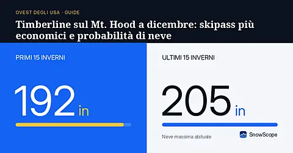
A Timberline lo skipass giornaliero costa 129 $ in bassa stagione e 161 $ in alta stagione; lo skipass pomeridiano è a 96 $ in bassa stagione. A metà montagna di solito si trovano 52 in (132 cm) entro il 15 dicembre.

Da Ski Cooper (49 $ nei giorni feriali, 99 $ nel weekend) a Mt. Baker (98,80 $ contro 115,42 $): le differenze di prezzo di dicembre verificate in sette stazioni dell'Ovest americano, con le loro probabilità di neve.

Il 3-Pack 2026/2027 di Schweitzer costa 249 $, 83 $ al giorno secondo il conteggio dello stesso resort. La cima di solito mantiene 54 in (138 cm) di neve entro il 15 dicembre.

Krvavec a dicembre: giornaliero 47 EUR, 6 giorni 205 EUR, ma solo 13 cm a metà montagna in un tipico 15 dicembre e 11 inverni su 46 senza neve quel giorno.

Scia su 157 km di piste mappate a Serre Chevalier, dove la cima della montagna ha una probabilità del 100 % di avere neve entro metà dicembre.
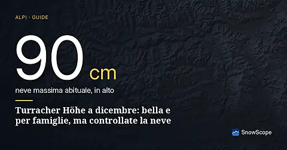
Turracher Höhe a dicembre: 23 cm a metà montagna in un tipico 15 dicembre, 39 % degli inverni con 30 cm prima di Natale; 6 giorni in bassa stagione 353 EUR.

Hochkar a dicembre: giornalieri visti da 32,90 a 47,90 EUR nelle date di dicembre; 38 cm a metà montagna in un tipico 15 dicembre, in calo dagli anni '80.

Idre Fjäll a dicembre: 32 cm a metà montagna in un tipico 15 dicembre; 65 % degli inverni con 30 cm a metà dicembre, 76 % a Natale. Probabilità oneste.

Brighton da 72 $ contro Ski Cooper a 49 $ nei giorni feriali e Wolf Creek a 96 $: le stazioni economiche dello Utah e del Colorado a confronto su 46 inverni di neve a dicembre.

Dieci stazioni sciistiche europee classificate per il valore di dicembre, guidate da Les 2 Alpes con 75 cm di neve a metà montagna.

Gli skipass giornalieri di Brundage partono da appena 65 $ in alcuni giorni; a mezza montagna c'erano 20 in (50 cm) di neve il 15 dicembre nell'87 % dei nostri inverni passati. Date festive da evitare.

Boí Taüll parte da 2039 m e batte Baqueira Beret sul prezzo dello skipass, anche se la neve di inizio dicembre richiede un po' di pazienza.

Sälen a dicembre: 28 cm in un tipico 15 dicembre e 48 % degli inverni con 30 cm a metà dicembre, meno che negli anni '80; Trysil accanto fa meglio.

Gli skipass giornalieri adulti di Snow King partono da 100 $. Secondo la nostra storia nevosa, a mezza montagna si registravano 20 in (50 cm) entro il 15 dicembre nell'87 % degli inverni: un modo economico per sciare nella valle di Jackson.

Orcières Merlette offre una base elevata a 1.826 m e uno skipass di 6 giorni da 227 EUR, rendendolo una scelta affidabile per una vacanza sulla neve a dicembre.

Alpe d'Huez merita per dicembre 2026? Controlliamo le probabilità di neve, il prezzo di partenza di 58,00 EUR e confrontiamo con Les 2 Alpes.

Gli skipass sloveni sono i più economici (Krvavec 205 EUR per 6 giorni), ma lì la neve naturale di dicembre è rara; Lachtal, Hochkar e il ghiacciaio della Möll fanno meglio.

Loveland vende biglietti online a 60 $ fino al 13 dicembre 2026, poi a 159 $ alla cassa. La neve di inizio dicembre è abbastanza buona per approfittarne? I nostri 46 inverni passati rispondono settimana per settimana.

Cauterets offre 25 km di piste per 46 EUR, ma la nostra storia della neve mostra che la migliore possibilità di trovare copertura è l'ultima settimana di dicembre.

Sciare a Lachtal a dicembre: giornaliero 62 EUR, bambini fino a 6 anni gratis, 46 cm a metà montagna in un tipico 15 dicembre, ma tendenza in netto calo.

I biglietti online di White Pass partono da 69 $ nei giorni fuori picco e 89 $ nei giorni di picco, e a mezza montagna il 15 dicembre c'erano 20 in (50 cm) di neve nell'87 % degli inverni passati.

Scia sui 131 km di piste della Forêt Blanche questo dicembre con uno skipass di sei giorni a 298 EUR.

Ruka a dicembre: skipass 6 giorni 265 EUR, giornaliero 58 EUR; 36 cm in un tipico 15 dicembre, ma solo 39 % degli inverni con 30 cm nella prima settimana.

Al Monterosa Ski lo skipass giornaliero online va da 40,00 a 71,00 EUR. A dicembre la neve è in quota: 124 cm abituali a 3.030 m, 6 cm a 1.207 m.

A Wolf Creek lo skipass adulti per la stagione 2026-2027 costa 96 $ nei giorni normali e 110 $ nei giorni di punta; a mezza montagna la neve era di 34 in (87 cm) in un tipico 15 dicembre.

Fellhorn/Kanzelwand a dicembre: 63 cm in vetta (1965 m) in un tipico 15 dicembre, 10 cm in basso; 6 giorni dell'Avvento a 344,50 EUR fino al 20 dicembre.

Pianifica il tuo viaggio a Les Orres nel dicembre 2026 confrontando i prezzi dei pass settimanali con il nostro storico della neve di 46 inverni passati.

Hemavan a dicembre: 82 cm a metà montagna in un tipico 15 dicembre, ogni inverno con 30 cm a metà dicembre; il dicembre più nevoso della nostra selezione nordica.
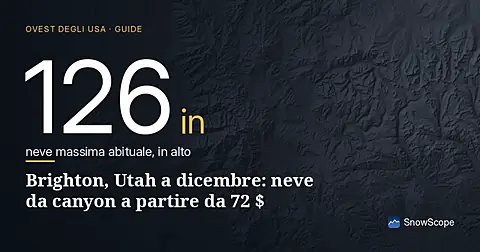
Gli skipass giornalieri di Brighton per il 2026/27 partono da 72 $ comprando in anticipo. A mezza montagna il 15 dicembre ci sono di solito 37 in (94 cm) di neve, contro 25 in (64 cm) a Park City.

Confronta Grandvalira e le stazioni spagnole a dicembre 2026 per profondità della neve, altitudine degli impianti e prezzi a partire da 49,00 EUR.
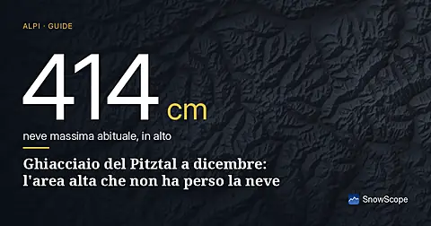
Ghiacciaio del Pitztal a dicembre: 87 cm a metà montagna in un tipico 15 dicembre, più neve che negli anni '80; giornaliero 77 EUR, 6 giorni 410 EUR.

16 stazioni sciistiche americane economiche classificate secondo le probabilità di neve a dicembre su 46 inverni passati, con i prezzi giornalieri verificati: da 49 $ nei giorni feriali a 125 $ e oltre.

Per una settimana bianca in famiglia a basso costo a dicembre ad Astún-Candanchú, punta a fine dicembre, quando le piste in quota hanno buona neve nel 67 % degli inverni passati.

Germania a dicembre: la Zugspitze e la vetta del Fellhorn avevano 30 cm a metà dicembre in almeno 9 inverni su 10; Sudelfeld, Brauneck e Feldberg raramente.
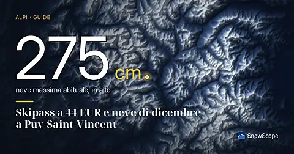
Puy-Saint-Vincent offre uno skipass giornaliero adulto a 44 EUR con buona neve a dicembre in quota, confrontato qui con il grande vicino Serre Chevalier.

In tutti i nostri 46 inverni passati, a metà montagna di Grand Targhee c'erano sempre almeno 20 in (50 cm) di neve il 15 dicembre. Il biglietto giornaliero online va da 125 $ a 180 $ a seconda della data.

Oppdal a dicembre: 60 cm alla base (585 m) in un tipico 15 dicembre, 93 % degli inverni con 30 cm a metà dicembre, meglio della base di Trysil.

Grimentz-Zinal offre 71 km di piste e una neve sicura in alta quota per il tuo viaggio di dicembre, con skipass di 6 giorni a CHF 339,00.
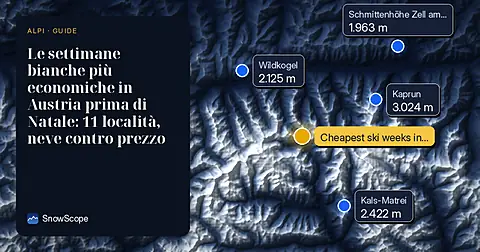
Austria prima di Natale: Galtür 258 EUR e Kühtai 269 EUR per 6 giorni, con 30 cm in oltre il 90 % degli inverni; i ghiacciai costano di più, le piccole stazioni sono un azzardo.

Stai pianificando un viaggio a dicembre a Baqueira Beret? Guarda la nostra cronologia della neve, i prezzi dei biglietti a partire da 70,00 € per un pass giornaliero e come si confronta con Astún-Candanchú.

Classifichiamo le stazioni sciistiche francesi in base alle probabilità di neve a dicembre e ai prezzi dei pass, partendo da 36,00 EUR per un pass giornaliero adulto a Les Karellis.

A Oukaïmeden, dicembre dà 18 cm a metà montagna in un mese tipico, contro 44 cm a febbraio e 53 cm a marzo. Cosa dicono 46 inverni sul mese giusto per sciare.

Galtür a dicembre: 55 cm a metà montagna in un tipico 15 dicembre, 93 % degli inverni con 30 cm a metà dicembre; giornaliero di bassa 55,50 EUR fino al 18 dicembre.

Geilo a dicembre: 57 cm a metà montagna in un tipico 15 dicembre, 96 % degli inverni con 30 cm a metà dicembre; giornaliero da 590 NOK (circa 56 EUR).

Grandvalira viene spesso venduta come una meta economica per sciare a dicembre, eppure la neve naturale alla base è in media di soli 9 cm negli scorsi inverni.

Hemsedal a dicembre: 70 cm a metà montagna e 106 cm in vetta in un tipico 15 dicembre, ma 32 cm alla base; Geilo vicino da 590 NOK al giorno.

Ghiacciaio di Hintertux a dicembre: 98 cm a 3245 m e 52 cm a metà montagna in un tipico 15 dicembre; giornaliero 82 EUR, 6 giorni 399 EUR.

Confronta le probabilità di neve a dicembre e i prezzi verificati degli skipass a partire da 40,00 EUR nelle aree sciistiche italiane per la tua gita in auto nel weekend.

Sciare a Kühtai a dicembre: 60 cm alla base (1939 m) in un tipico 15 dicembre, skipass 6 giorni in bassa stagione a 269 EUR fino al 18 dicembre.
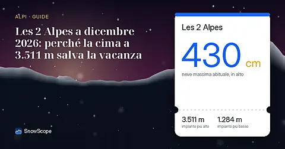
Les 2 Alpes raggiunge i 3.511 m per neve abbondante a dicembre 2026, con un skipass adulti di 6 giorni a 266,50 EUR.

Les Karellis offre 45 km di piste e uno skipass adulto di 6 giorni a 191,00 EUR con una probabilità del 98 % di neve a metà montagna a fine dicembre.

Levi a dicembre: 38 cm in un tipico 15 dicembre, 91 % degli inverni con 30 cm a Natale, e più neve di un tempo; giornaliero 60 EUR, online 57 EUR.
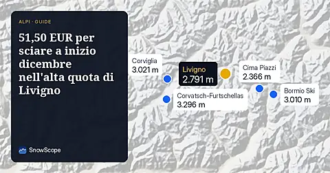
Scia a Livigno per 51,50 EUR al giorno prima del 18 dicembre, quando la neve in cima raggiunge i 30 cm nel 100 % degli inverni passati.

A Michlifen, l'89 % degli inverni non ha quasi neve il 15 dicembre (meno di 5 cm). Cosa dicono 46 inverni sullo sci nel Medio Atlante a dicembre.

Montgenèvre ha 56 cm di neve abituale a dicembre alla base, offrendo agli sciatori del weekend una copertura migliore rispetto a Sestriere, oltre il confine.
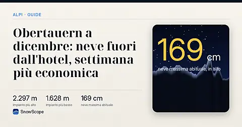
Sciare a Obertauern a dicembre: 43 cm in un tipico 15 dicembre a metà montagna, skipass 6 giorni a 331 EUR prima di Natale. Storico neve e prezzi.

Oukaïmeden a metà dicembre: 16 cm a metà montagna in un inverno tipico, 50 cm o più in solo l'11 % degli inverni. Data per data, cosa dicono 46 inverni.

Oukaïmeden è a 50 km in linea d'aria da Marrakech. Come riuscire in un weekend di sci a dicembre: quando partire, quali probabilità di neve, cosa si sa dei prezzi.

Les 3 Vallées: 75,70 € al giorno dal 5 al 18 dicembre 2026. Oukaïmeden: nessuna tariffa ufficiale online, 16 cm a metà montagna a metà dicembre. Il confronto onesto.

Pila sopra Aosta offre uno skipass giornaliero fisso a 60,00 EUR e neve affidabile a dicembre sulle quote alte.

Gli impianti di Saas-Fee raggiungono i 3.556 m, dove la nostra storia della neve mostra che il 100 % degli inverni passati ha almeno 30 cm di neve entro metà dicembre.
12 località nordiche a dicembre: Hemavan, Hemsedal e Geilo avevano 30 cm a metà montagna a metà dicembre nel 96-100 % degli inverni; giornalieri finlandesi 58-60 EUR.

Probabilità di neve a dicembre su 46 inverni e prezzi giornalieri verificati: Ski Cooper 49 $, Les 3 Vallées 75,70 €, Oukaïmeden senza tariffa ufficiale. Dove funziona una giornata di sci economica a dicembre.

Scopri le piste tranquille di St-Luc Chandolin, dove la neve a metà montagna ha raggiunto i 30 cm nel 98 % degli inverni a fine dicembre.

Trysil a dicembre: 44 cm a metà montagna in un tipico 15 dicembre, 83 % degli inverni con 30 cm a metà dicembre; i prezzi sono dinamici, quindi prenotate presto.
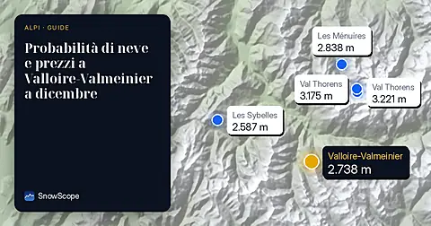
Valloire-Valmeinier offre 131 km di piste e il 98 % di probabilità di avere 30 cm di neve a metà montagna entro metà dicembre.

Zugspitze a dicembre: 122 cm a 2627 m in un tipico 15 dicembre, giornaliero adulti online 70,50 EUR; Garmisch-Classic sotto 69 EUR con molta meno neve.

Mölltaler Gletscher a dicembre: 66 cm all'impianto più basso (2103 m) e 128 cm a metà montagna in un tipico 15 dicembre; 6 giorni in bassa stagione 332 EUR.

Mt. Baker a dicembre: 46 in (116 cm) di neve a metà montagna in un tipico 15 dicembre, e uno skipass da 98,80 $ dal lunedì al giovedì, venduto solo in giornata alla cassa.
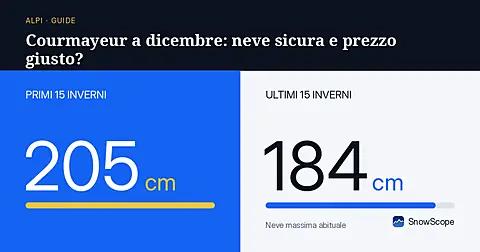
Un principiante prudente può fidarsi di Courmayeur a dicembre, quando la media a metà montagna è di 60 cm di neve nei nostri inverni passati?
Åre a dicembre: 40 cm a metà montagna in un tipico 15 dicembre, 89 % degli inverni con 30 cm a metà dicembre, ma forte calo in vetta dagli anni '80.
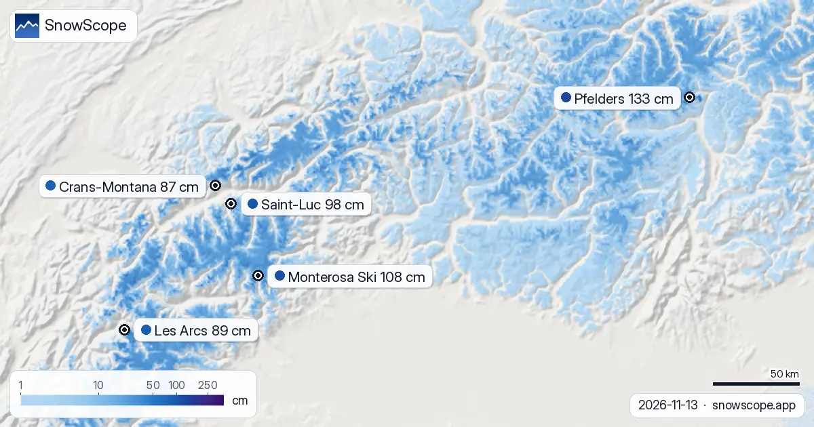
Modello più previsione sulle Alpi oggi danno neve fresca polverosa. Cosa indossare, cosa portare e quando sciare, località per località. I consigli …

Dal 11 novembre la copertura nevosa è passata da 39.090 km² a 76.100 km²; il 16 novembre la previsione indica 57.910 km². Pfelders ha oggi il manto …

Le condizioni della neve a La Rosière nella nostra corsa del modello dell'11 novembre: 24 cm in vetta (2799 m), metà montagna e paese senza neve, e una previsione a sette giorni di 108 cm in vetta e 61 cm a metà montagna. Il versante soleggiato del Piccolo San Bernardo in numeri.

La neve all'Alpe Devero (Ossola, Piemonte) secondo il nostro modello: 2 cm in vetta (2201 m), niente più in basso, 36 cm di neve fresca prevista in vetta nei prossimi sette giorni. La piccola località senza auto e il suo inverno abituale in numeri.

Ancora niente neve a Oukaïmeden: 0 cm a tutte e tre le quote, nulla negli ultimi sette giorni, nulla nella settimana che viene. Cosa porta un novembre abituale nell'Alto Atlante e quando puntare allo sci.


Abbiamo confrontato la neve del 10 novembre con la neve più alta di ogni inverno in 46 stazioni sciistiche, su 46 inverni. Un inizio nevoso aiuta, ma meno di quanto pensino molti sciatori.

Una nevicata il 4 novembre ha lasciato da 8 a 13 inches di neve fresca su cinque stazioni in quota del Colorado vicino ad Aspen. Cinque giorni dopo, metà era sparita. Cosa significa per le giornate di powder.

Quanto a lungo i Pirenei sono rimasti bianchi ogni inverno dal 2000-01, visti dal satellite, e l'altezza della neve in 10 stazioni con lunghe serie. Tre inverni magri di fila sono finiti nel 2025-26; questo autunno è cominciato in modo normale.

Una mappa delle pendenze di Les Grands Montets e di altri sette comprensori mostra quanto terreno supera i 30°, 35° e 40°, e perché questa soglia conta per le valanghe.

In 24 inverni su 46 le località del versante italiano e delle Alpi meridionali francesi hanno avuto un inverno relativamente più ricco del versante nord. Il grafico, le grandi annate e il tempo che le ha prodotte.

A dicembre la neve dipende prima di tutto dalla quota. 46 inverni passati in 676 stazioni delle Alpi mostrano quanta neve aspettarsi il 1°, il 15 e il 22 dicembre, da sotto i 1.200 m a oltre i 2.400 m.

Whistler Blackcomb ha ricevuto 75 cm di neve nuova in vetta in una settimana, poi una perturbazione mite con 124 mm d'acqua. Una guida semplice su fondo, neve fresca, pioggia e crosta.

Un piano economico di 3 giorni sul Lago di Como a dicembre con i prezzi reali 2026-27: treni, battelli, funicolare e sci ai Piani di Bobbio o a Madesimo, quanto si risparmia rispetto a Cortina e le probabilità di neve a Natale.
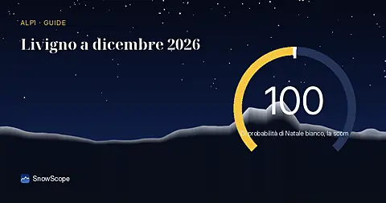
La neve di oggi a Livigno, cosa dice la previsione stagionale europea per dicembre e perché a Natale la quota vince su un mese caldo.

La neve di oggi a Cortina, la previsione stagionale europea per dicembre e le nostre probabilità di un Natale bianco nelle Dolomiti orientali.
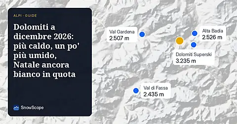
Dove dicembre 2026 sembra più o meno nevoso nelle Dolomiti, dalla Val Gardena a Cortina: la previsione stagionale europea, la nostra mappa e le probabilità di un Natale bianco.

Quanta acqua potrebbe tenere la neve dell'Atlante a febbraio 2027: la previsione stagionale europea è di circa 3 °C più calda e più umida a ovest e a sud, e le probabilità di neve restano basse sui bacini del Marocco.

La previsione stagionale europea rende gennaio 2027 circa 2 °C più caldo sull'Atlante. La nostra tendenza per altezza della neve, acqua nella neve e acqua immagazzinata per i fiumi del Marocco.

Il Bou Iblane è ancora spoglio. La previsione stagionale europea vede un dicembre nettamente più caldo, e su tutto il Medio Atlante nevoso le nostre probabilità tendono a meno neve.

Dove dicembre 2026 sembra più o meno nevoso dal Montana al New Mexico: la previsione stagionale europea e la nostra mappa, con Colorado, Utah e Rocciose del Nord.

Il manto nevoso dagli Écrins alle Alpi Marittime e al Piemonte si riempirà come al solito a dicembre 2026? La previsione stagionale europea e la nostra mappa, montagna per montagna.

Ancora niente neve a Oukaimeden. La previsione stagionale europea vede un dicembre più caldo sull'Alto Atlante, e la nostra mappa mostra probabilità più basse su quasi tutte le cime.

La neve di oggi ai Grands Montets, la previsione stagionale europea per dicembre e la nostra mappa di dove dicembre sembra più o meno nevoso intorno al Monte Bianco.

Vail in numeri: picco abituale di circa 64 in (162 cm) a metà montagna in 46 inverni passati, marzo il mese più nevoso, più terreno, accesso e sicurezza.

Zermatt in cifre: dove la neve resiste, i mesi più sicuri e come raggiungere il paese senz'auto, da 46 inverni passati.

Steamboat, Colorado, per famiglie: cosa va bene per i più piccoli, i bambini, i ragazzi e i genitori, con la neve di 46 inverni passati a tre quote.

Verbier va bene per i principianti? Quando la neve è migliore? Come si arriva? Risposte sulle 4 Vallées e su 46 inverni passati.

Come passare il primo giorno a Park City Mountain, Utah, e quando andarci: il nostro storico dà circa 71 in (180 cm) come picco abituale a metà montagna in 46 inverni passati.

Il Sellaronda da Selva (Sëlva) in Val Gardena: passi Gardena, Campolongo, Pordoi e Sella in ordine, con il nostro storico neve di 46 inverni passati.

Mt Baker, Washington: circa 133 in (337 cm) di picco abituale a metà montagna in 46 inverni passati, un record mondiale di neve, nessun alloggio in quota.

Val d'Isère e l'Espace Killy per principianti, sciatori intermedi ed esperti, con la neve di 46 inverni passati a tre quote.

Pianifica Mammoth Mountain per stagione: circa 93 in (235 cm) di picco abituale a metà montagna in 46 inverni passati, marzo il più nevoso, primavere lunghe, inverni variabili.

Kitzbühel è famosa e bassa. Che cosa dicono 46 inverni passati della neve a 762 m, 1.377 m e 1.993 m, che cosa è cambiato e quali settimane sono la scommessa più sicura.
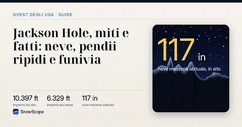
I miti su Jackson Hole verificati con i fatti e il nostro storico: circa 80 in (204 cm) di picco abituale a metà montagna in 46 inverni passati, senza un calo chiaro.
Abbiamo confrontato la mappa dell'altezza neve di SnowScope con 2.012 stazioni di misura: RMSE 7,7 cm, scarto -0,5 cm, neve o niente neve giusto l'88 % delle volte. Cosa funziona, cosa non ancora e cosa migliora dopo.

Dieci punti pratici per una vacanza sugli sci a Livigno: le strade, il freddo, i negozi duty-free, i due versanti e il periodo migliore per la neve, da 46 inverni passati del nostro storico.

Arrivare a Telluride d'inverno, aeroporto per aeroporto: Telluride Regional, Montrose, la strada 145 con la legge sulla trazione del Colorado e la cabinovia gratuita per Mountain Village.
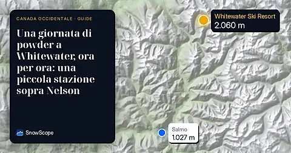
Come si svolge di solito una giornata di neve a Whitewater, vicino a Nelson, dal primo sguardo alle previsioni all'ultima discesa, con la neve di 46 inverni passati a tre quote.

Arc 1600, 1800, 1950 e 2000 a confronto per neve, piste e accesso, con 46 inverni passati del nostro storico neve a tre quote di Les Arcs.

Arrivare a Snowbird d'inverno: una sola strada nel canyon (SR-210), la legge sulla trazione dello Utah, lo ski bus UTA e il tragitto dall'aeroporto.
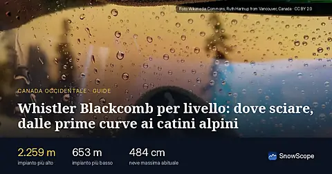
Whistler Blackcomb per ogni livello, con il nostro storico: circa 370 cm di picco abituale a metà montagna in 46 inverni passati, marzo e aprile i mesi più nevosi.
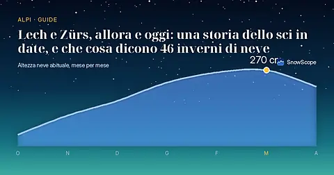
Dai contadini walser al Weißer Ring: le date che hanno fatto Lech Zürs, poi il nostro storico della neve allora e oggi, i primi quindici di 46 inverni passati contro gli ultimi quindici.

In auto a Palisades Tahoe d'inverno: distanze da Reno, controlli catene R-1, R-2 e R-3, parcheggio da prenotare, bus TART gratis.
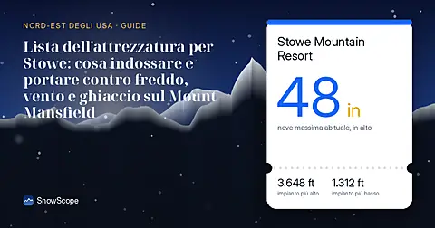
Una lista pratica per Stowe, Vermont: strati, protezione del viso, maschera, lamine affilate e scaldamani, legata alla neve di 46 inverni passati sul Mount Mansfield.

Sciare a Lake Louise a inizio stagione: perché parte presto, com'è di solito la neve di novembre e dicembre in 46 inverni passati e come sciare su un fondo ancora sottile.

Cosa è vero di La Grave, la montagna del fuoripista sotto la Meije: terreno, sicurezza, neve per mese e tendenza, da 46 inverni passati.

Big Sky, Montana, facile da immaginare: 5.850 acri sotto il Lone Peak, e una neve circa cinque volte più spessa vicino alla cima che alla base in 46 inverni passati.

Andorra non ha un grande aeroporto: come raggiungere Grandvalira da Barcellona o Tolosa, il tunnel dell'Envalira, la CG2 e i parcheggi.
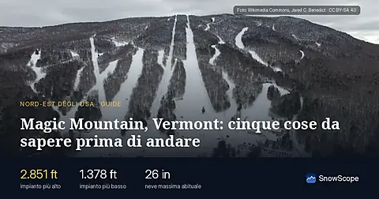
Magic Mountain a Londonderry, Vermont: una piccola stazione indipendente con boschi ripidi, una vecchia seggiovia rossa e poca neve naturale. Cinque cose da sapere, con la neve di 46 inverni passati.

Sciate prima con la mente tutto il dislivello di Revelstoke: la neve in cima, a metà montagna e alla base in valle in 46 inverni passati, e quando ogni parte è al meglio.

Sette giorni nella Silvretta Arena, uno alla volta: dove è la neve, quando passare a Samnaun e che cosa dicono 46 inverni passati della neve di Ischgl a tre quote.

Aspen Snowmass a confronto: Snowmass ha circa 75 in (190 cm) di picco abituale a metà montagna in 46 inverni passati, Aspen Mountain circa 69 in (174 cm).

Gourette e Cauterets a confronto: quote, neve abituale per mese, settimane migliori e come arrivare, da 46 inverni passati.
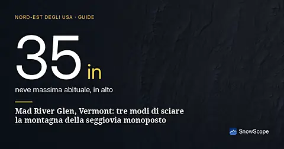
Mad River Glen, Vermont: neve naturale, circa 30 in (75 cm) di picco abituale a metà montagna in 46 inverni passati, febbraio il mese più nevoso. Tre modi per organizzare la giornata.

Banff Sunshine Village mese per mese: circa 100 cm a metà montagna in un marzo abituale in 46 inverni passati, aprile il più nevoso in alto, stagione fino a fine maggio.
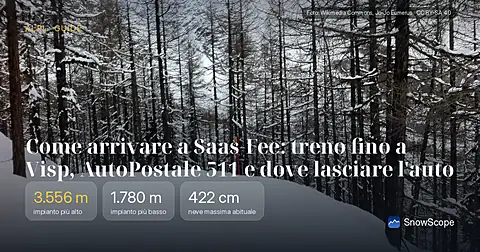
Saas-Fee è senza auto: treno fino a Visp e AutoPostale 511, la strada della valle del Rodano e i treni auto, i parcheggi all'ingresso e i bus gratuiti.

Circa 109 in (276 cm) è il picco abituale di Alta a metà montagna in 46 inverni passati. Qui: perché lo snowboard resta a casa, i mesi migliori e come salire nel canyon.

Alpe d'Huez guarda il sole. Come organizzare la giornata per ora e quota, con la neve di 46 inverni passati dai villaggi bassi al Pic Blanc.

La nostra serie di 46 inverni sulle Alpi, 108 punti da 667 a 3.872 m: meno giorni di neve ovunque, in modo netto nell'81 %. Cosa è cambiato e perché.
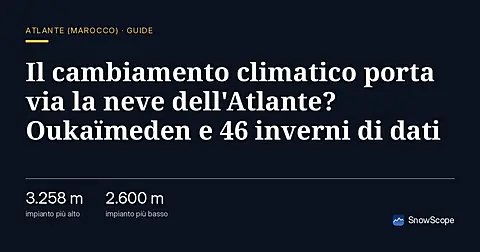
Alla quota di Oukaïmeden la nostra serie di 46 inverni mostra il 12 % di giorni di neve in meno; più in basso il segnale si perde. Cosa sappiamo.

Baqueira-Beret è nella Val d'Aran, sul versante atlantico dei Pirenei. Che cosa significa per la sua neve, verificato su 46 inverni passati contro La Molina, e quando andare.

Ritratto di Bonneval-sur-Arc in Alta Moriana: tetti di pietra, un passo chiuso, un piccolo comprensorio e una neve sorprendentemente spessa, da 46 inverni passati del nostro storico.

Come passare una prima giornata di sci a Chamonix, dai Grands Montets sopra Argentière al momento giusto per ogni pendio, con 46 inverni di dati sulla neve.

Cortina d'Ampezzo in tre modi: Tofana, Faloria-Cristallo e Cinque Torri-Lagazuoi, con 46 inverni di dati sulla neve a tre quote.

Chantarella, Marguns, Piz Nair, White Turf: le parole che si sentono a St. Moritz, spiegate, e cosa dicono 46 inverni passati del nostro storico neve su ogni quota della Corviglia.
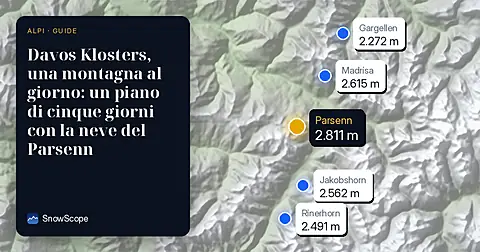
Davos e Klosters condividono sei montagne dello sci. Un piano giorno per giorno, partendo dal Parsenn, con quello che 46 inverni passati del nostro storico dicono delle sue quote.

Quando prenotare Courchevel e le 3 Vallées, quale paese scegliere e dove la neve resiste, da 46 inverni passati.

St. Anton e Ski Arlberg lungo l'inverno: l'altezza neve abituale ogni mese a tre quote, da 46 inverni passati.

Un anno di neve a Sölden, fase per fase: quando i ghiacciai si imbiancano, il weekend di Coppa del Mondo, il cuore dell'inverno e le settimane di primavera, da 46 inverni passati a tre quote.

Meno giorni di neve in tutti i 120 punti studiati sui Pirenei dal 1980-81, soprattutto sotto 1.500 m: la nostra serie di 46 inverni e la ricerca.

Un taccuino pratico su Oukaïmeden, nell'Alto Atlante: quando arriva di solito la neve, quanta, quali pendii scegliere e come arrivare da Marrakech.

Come vivere una buona giornata a Luz-Ardiden, piccolo comprensorio sopra Luz-Saint-Sauveur negli Alti Pirenei: la strada, i due settori, la neve di 46 inverni passati e le settimane da scegliere.
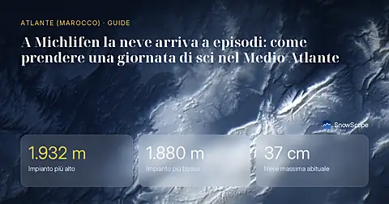
Michlifen, vicino a Ifrane, ha neve a brevi episodi più che una stagione. Che cosa mostrano 46 inverni passati, perché l'altezza abituale è zero e come esserci nei giorni giusti.

Tre modi di passare una giornata da Méribel: a est verso Courchevel, a sud verso Val Thorens, o in casa sul Mont Vallon, con la neve di 46 inverni passati a tre quote.

Aria mite con le prossime piogge e nevicate: il limite neve si trova per lo più tra 2.190 e 2.850 m. Mappa, grafico e animazione.


Terenten ha 73 cm sui versanti superiori al 4 novembre; il livello di congelamento raggiungerà 2.970 m il 5 novembre, portando pioggia alla vetta a 1.381 m.

Abbiamo combinato l'altezza neve di oggi, la neve fresca delle ultime 72 ore e la previsione per scegliere Crissolo, Prali e La Grave. Tra queste …